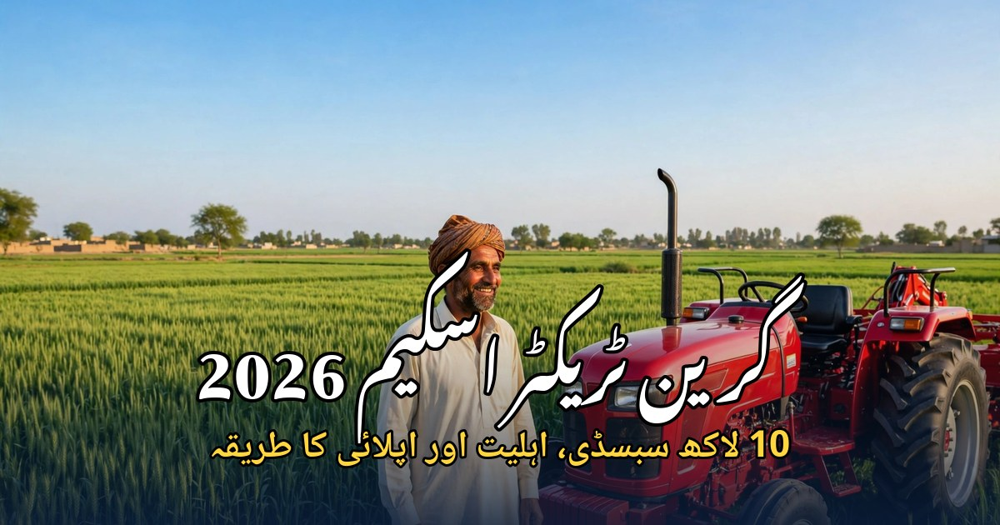

گرین ٹریکٹر اسکیم 2026: کسانوں کے لیے 10 لاکھ روپے سبسڈی کا مکمل طریقہ

پنجاب میں کاشتکاری کرنے والے چھوٹے اور درمیانے کسانوں کے لیے حکومتِ پنجاب کی گرین ٹریکٹر اسکیم ایک بڑی سہولت ہے۔ اس اسکیم کے تحت اہل کسانوں کو نئے ٹریکٹر کی خریداری پر 10 لاکھ روپے تک کی سبسڈی ملتی ہے، تاکہ وہ جدید مشینری سے اپنی فصل بہتر انداز میں اگا سکیں۔ فیز 2 میں 20 ہزار ٹریکٹرز دینے کا ہدف ہے، اور درخواست مکمل طور پر آن لائن جمع کرائی جا سکتی ہے۔ اس مضمون میں اسکیم کی تفصیل، اہلیت کی شرائط، درکار دستاویزات اور آن لائن اپلائی کا طریقہ آسان اردو میں بتایا گیا ہے۔
1۔ گرین ٹریکٹر اسکیم کیا ہے؟
گرین ٹریکٹر اسکیم وزیراعلیٰ پنجاب کی زرعی اسکیم ہے، جس کا مقصد چھوٹے اور درمیانے کسانوں کو سستے داموں جدید ٹریکٹر فراہم کرنا ہے۔ ہل چلانا، بوائی اور کٹائی — یہ سب ٹریکٹر کے بغیر ممکن نہیں، مگر نیا ٹریکٹر لاکھوں روپے کا ہوتا ہے۔ یہ اسکیم اسی مشکل کا حل ہے: حکومت ہر کامیاب درخواست گزار کو ایک ٹریکٹر پر 10 لاکھ روپے کی سبسڈی دیتی ہے، یعنی قیمت کا بڑا حصہ حکومت ادا کرتی ہے۔ پہلے مرحلے میں 9,500 کسانوں کو یہ سہولت ملی، اور اب دوسرے مرحلے میں 20,000 ٹریکٹرز دینے کا اعلان کیا گیا ہے۔ مستفید ہونے والوں کا انتخاب شفاف ڈیجیٹل قرعہ اندازی سے کیا جاتا ہے۔
2۔ اسکیم کے اہم فوائد
سب سے بڑا فائدہ 10 لاکھ روپے کی سبسڈی ہے، جو ٹریکٹر کی قیمت کو کسان کی پہنچ میں لے آتی ہے۔ دوسرا فائدہ یہ ہے کہ اسکیم میں 75 سے 125 ہارس پاور کے جدید ٹریکٹر شامل ہیں۔ تیسرا فائدہ مکمل آن لائن نظام ہے — درخواست گھر بیٹھے جمع کرائی جا سکتی ہے۔ چوتھا فائدہ شفافیت ہے: قرعہ اندازی کمپیوٹر کے ذریعے ہوتی ہے اور نتائج سرکاری پورٹل پر شائع کیے جاتے ہیں۔ پانچواں فائدہ یہ ہے کہ کسان اپنی پسند کا منظور شدہ برانڈ اور ماڈل منتخب کر سکتا ہے، جیسے میسی فرگوسن (ملت ٹریکٹرز) یا نیو ہالینڈ (الغازی ٹریکٹرز)۔
3۔ کون درخواست دے سکتا ہے؟ اہلیت کی شرائط
درخواست دینے سے پہلے اہلیت کی شرائط جان لیں، تاکہ درخواست رد نہ ہو۔ پہلی شرط: درخواست گزار پنجاب کا مستقل رہائشی ہو۔ دوسری شرط: اس کے نام پر 1 سے 50 ایکڑ تک زرعی زمین ہو، جس کا ریکارڈ پنجاب لینڈ ریکارڈ سسٹم (LRMIS) میں درج ہو — زمین کا ریکارڈ کمپیوٹرائزڈ ہونا ضروری ہے، کیونکہ اسی کی تصدیق کی جاتی ہے۔ تیسری شرط: نادرا سے جاری درست شناختی کارڈ (CNIC)۔ چوتھی شرط: موبائل نمبر کسان کے اپنے نام پر رجسٹرڈ ہو، کیونکہ تمام پیغامات اسی نمبر پر آتے ہیں۔ پانچویں شرط: بینک اکاؤنٹ ہو، کیونکہ سبسڈی اور ادائیگی کا معاملہ بینک کے ذریعے ہوتا ہے۔
4۔ درخواست کے لیے درکار دستاویزات
درخواست بھرنے سے پہلے یہ چیزیں تیار رکھیں: اپنا شناختی کارڈ (CNIC)، زمین کا تازہ فرد یا لینڈ ریکارڈ کی تفصیل، تازہ پاسپورٹ سائز تصویر، اپنے نام پر رجسٹرڈ موبائل نمبر، اور بینک اکاؤنٹ کی تفصیل (آئی بی اے این بہتر ہے)۔ اگر زمین مشترکہ کھاتے میں ہے تو اس کا ریکارڈ بھی ساتھ رکھیں۔ دستاویزات کی واضح تصویر موبائل میں محفوظ کر لیں — دھندلی تصویر سے درخواست میں تاخیر ہو سکتی ہے۔ تمام تفصیل شناختی کارڈ اور زمین کے ریکارڈ کے مطابق درست لکھیں؛ غلط تفصیل پر درخواست مسترد ہو سکتی ہے۔
5۔ آن لائن اپلائی کا طریقہ — قدم بہ قدم
آن لائن درخواست دینا بہت آسان ہے اور اس میں کسی ایجنٹ کی ضرورت نہیں۔ پہلا قدم: موبائل یا کمپیوٹر پر سرکاری پورٹل gts.punjab.gov.pk کھولیں۔ دوسرا قدم: اپنا شناختی کارڈ نمبر اور اپنے نام پر رجسٹرڈ موبائل نمبر درج کر کے اکاؤنٹ بنائیں، اور موبائل پر آنے والا او ٹی پی کوڈ درج کر کے تصدیق کریں۔ تیسرا قدم: فارم میں اپنی اور زمین کی تفصیل درست لکھیں۔ چوتھا قدم: ٹریکٹر کی قسم (مقامی یا درآمد شدہ) منتخب کریں اور منظور شدہ فہرست میں سے برانڈ، ہارس پاور اور ماڈل چنیں۔ پانچواں قدم: درکار دستاویزات اپ لوڈ کریں۔ چھٹا قدم: شرائط سے اتفاق کر کے کیپچا درج کریں اور فارم جمع کرا دیں۔ فارم جمع ہونے پر تصدیقی ایس ایم ایس ملے گا — اپنا ریفرنس نمبر محفوظ رکھیں، اسی سے اسٹیٹس چیک کیا جاتا ہے۔
6۔ جن کے پاس انٹرنیٹ نہیں، وہ کیا کریں؟
اگر آپ کے پاس انٹرنیٹ یا سمارٹ فون نہیں ہے تو پریشان نہ ہوں — حکومت نے آف لائن طریقہ بھی رکھا ہے۔ اپنے علاقے کے ڈپٹی ڈائریکٹر زراعت (ایکسٹینشن) کے دفتر جا کر کاغذی فارم لیں، اسے پُر کر کے دستاویزات کے ساتھ وہیں جمع کرا دیں۔ جن موضع جات کا ریکارڈ ابھی کمپیوٹرائزڈ نہیں ہوا، وہاں کے کسان بھی اسی طریقے سے درخواست دے سکتے ہیں۔ فارم جمع کرانے کے بعد دفتر سے رسید یا ریفرنس نمبر ضرور لیں۔ فارم بھرنے میں مشکل ہو تو دفتر کے عملے سے مدد لیں — اس کے لیے کسی کو پیسے دینے کی ضرورت نہیں۔
7۔ قرعہ اندازی اور ٹریکٹر کی وصولی
درخواست جمع ہونے کے بعد محکمہ زراعت آپ کی زمین اور شناختی کارڈ کا ریکارڈ چیک کرتا ہے۔ تصدیق مکمل ہونے پر کامیاب کسانوں کا انتخاب شفاف ڈیجیٹل قرعہ اندازی سے کیا جاتا ہے۔ نام آنے پر ایس ایم ایس سے اطلاع دی جاتی ہے، اور کامیاب امیدواروں کی فہرست پورٹل پر بھی شائع کی جاتی ہے۔ اس کے بعد منظور شدہ ڈیلر سے ٹریکٹر لینا ہوتا ہے — سبسڈی حکومت ادا کرتی ہے، باقی قیمت آپ ڈیلر کو دیتے ہیں۔ ٹریکٹر ملنے میں کچھ وقت لگ سکتا ہے، اس لیے پورٹل پر اسٹیٹس چیک کرتے رہیں۔ نام نہ آئے تو اگلے مرحلے میں دوبارہ درخواست دی جا سکتی ہے۔
8۔ آخری تاریخ اور اسٹیٹس کیسے چیک کریں؟
آخری تاریخ اور قرعہ اندازی کی تاریخ تبدیل ہو سکتی ہے، اس لیے درست تاریخ کے لیے صرف سرکاری پورٹل gts.punjab.gov.pk پر بھروسہ کریں۔ درخواست کا اسٹیٹس بھی اسی پورٹل پر شناختی کارڈ نمبر سے چیک کیا جا سکتا ہے، اور ہر اہم مرحلے پر موبائل پر ایس ایم ایس بھی آتا ہے۔ مزید معلومات کے لیے محکمہ زراعت پنجاب کی ہیلپ لائن 0800-17000 پر صبح 8 بجے سے رات 8 بجے تک (پیر سے ہفتہ) رابطہ کریں۔
9۔ عام غلطیاں جن سے بچنا ضروری ہے
اسکیم کے نام پر فراڈ بھی عام ہے، اس لیے ہوشیار رہیں۔ پہلی غلطی: کسی ایجنٹ یا دلال کو پیسے دینا — درخواست مکمل طور پر مفت ہے۔ دوسری غلطی: غلط موبائل نمبر دینا — اگر نمبر آپ کے نام پر نہیں تو تصدیقی کوڈ آپ تک نہیں پہنچے گا۔ تیسری غلطی: زمین کا پرانا ریکارڈ دینا — درخواست سے پہلے اپنا لینڈ ریکارڈ تازہ کرا لیں۔ چوتھی غلطی: فیس بک یا واٹس ایپ پر ملنے والے جعلی لنکس پر کلک کرنا — یہ آپ کی ذاتی معلومات چرا سکتے ہیں۔ صرف gts.punjab.gov.pk ہی اصلی پورٹل ہے۔ اگر کوئی سبسڈی دلوانے کے بدلے پیسے مانگے تو وہ فراڈ ہے۔
10۔ اکثر پوچھے جانے والے سوالات
سوال: گرین ٹریکٹر اسکیم میں کتنی سبسڈی ملتی ہے؟
جواب: ہر اہل کسان کو ایک ٹریکٹر پر 10 لاکھ روپے تک سبسڈی ملتی ہے۔
سوال: کون سے ٹریکٹر اس اسکیم میں شامل ہیں؟
جواب: 75 سے 125 ہارس پاور کے مقامی اور درآمد شدہ ٹریکٹر شامل ہیں؛ منظور شدہ برانڈز کی فہرست سرکاری پورٹل پر دیکھی جا سکتی ہے۔
سوال: سبسڈی کی رقم کیسے ملتی ہے؟
جواب: سبسڈی ٹریکٹر کی خریداری میں ایڈجسٹ ہوتی ہے — کامیاب کسان صرف باقی قیمت ڈیلر کو ادا کرتا ہے۔
گرین ٹریکٹر اسکیم پنجاب کے کسانوں کے لیے ایک سنہری موقع ہے — 10 لاکھ روپے کی سبسڈی سے نیا ٹریکٹر اب خواب نہیں رہا۔ اگر آپ اہلیت کی شرائط پر پورا اترتے ہیں تو آج ہی سرکاری پورٹل پر اپنی درخواست جمع کرائیں، اور اپنے کسان بھائیوں کے ساتھ یہ معلومات شیئر کریں تاکہ زیادہ سے زیادہ مستحق کسان فائدہ اٹھا سکیں۔